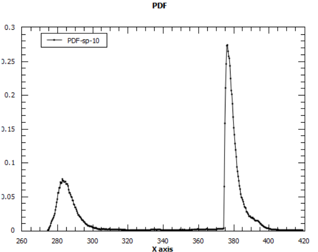

The PDF associated with the cost function chi-squared always seems to output a sort of exponential-like decay graph (tutorial seems to have one like that as well).
But in literature, I always see these chi-squared graphs having a Gaussian-distribution, is there a way to get a Gaussian-like distribution for this PDF instead of the exponential-like one?
Did you start the fitting far away from the minimum? What happens is you do a second fitting, but using as your initial guess the results from your first fit?
A Gaussian distribution of Chi2 implies you don’t stray far away from the optimal solution.
I am using the same fit procedure as per the tutorial (single lorentzian)
Could what I am seeing be a result of a local minimum, rather than the global one?
If you don’t mind me asking, how can I fit/set at a minimum guess/start a second fit on top of my already fitted data?
If you are using the “Fit Wizard”, then it’s just a matter of clicking again in the “Fit” button I did this, and still the Chi2 distribution is exponential in the second fit.
After thinking a bit about it, an exponential distribution is to be expected because the FABADA minimizer is nothing but a Monte Carlo simulation with exp^{-\delta \chi^2} being the probability of changing the fit parameters in the course of the minimization. Thus, you end up with a Boltzman distribution of \chi^2 values, that is, P(\chi) = exp^{\chi^2}/Z, with Z being the partition function,
Z = \sum_{conformations} exp^{\chi^2}.
The distribution of the fit parameters should be Gaussian-like, though.
I have used the Fit Wizard to do another fit, and like you the Chi2 again returns an exponential for my single Lorentzian.
Could this distribution be due to the fit itself (single lorentzian)?
From the following paper http://iopscience.iop.org/article/10.1088/1742-6596/663/1/012009/pdf
(FABADA Goes MANTID to Answer an Old Question: How Many Lines Are There?)
Their example uses three Lorentzians which gave a gaussian-like shape for the chi2 distributions.
I have a few more things to ask if you don’t mind, is there any specific literature I can use to read up more about the expected exponential distributiuon due to Monte Carlo simulation? I find it interesting and it definitely shed some light on what I see now.
The PDFs of the parameters indeed show as Gaussian-like.
I guess you’re referring to Figure 4 in the paper. Using one Lorentzian gives the blue distribution L1, which rapidly goes to zero for small Chi2 values.
Below is a fit I did using one Lorentzian with high MaxIterations and a very small ConvergenceCriteria in order to explore the minimum. I set NumberPDFBins very high to have the maximum of the distribution well resolved. You can see now the bell-shape of the Chi2 distribution, with an exponential decay for high Chi2 values.
In my previous post I made a mistake: exp^{\chi^2}/Z is not the distribution of \chi^2 values but the probability of a microstate. The distribution of \chi^2 must use the density of states g(\chi^2), which is the number of ways you can obtain the same \chi^2 value by trying different values of the fit parameters.
P(\chi^2) = g(\chi^2) * exp^{\chi^2}/Z
If your model is a single Lorentzian, then you don’t have much freedom to change the values of the fitting parameters and still obtain the same \chi^2. Thus, g(\chi^2) decays to zero very fast for small \chi^2. That’s why the L1 distribution of Figure 4 in the paper decays so sharply to zero. If your model is three Lorentzian, there there may be many combinations of the fit parameters that will give equally good \chi^2 values. Thus g(\chi^2) decays to zero much slower,and that’s why the L3 distribution has a broader maximum. At any rate, all distributions will decay exponentially at high \chi^2 values, when the exp^{\chi^2}/Z term takes over.
Wikipedia has a good enough intro to Monte Carlo in statistical physics. There, if you substitute Energy E for \chi^2, substitute \vec{r} for the set of fitting parameters of you fit function, and set \beta=1, you will have essentially what FABADA does.
Yes Figure 4 was the one in question. From the paper it definitely seems that the more Lorentzians added, the broader (more Gaussian-like) the resulting PDF seems to be.
Over the weekend I have experimented a bit with the FABADA parameters. Setting high MaxIterations/Small ConvergenceCriteria like you have done. Is there any other parameters of interest which may alter the shape of the resulting PDF?
1 Lorentzian fits stayed exponential, However, with 2 Lorentzians and the above changes in parameters i see this:
A guassian-like curve! And by using 3 Lorentzians i get the following:

Which i assume to be the existence of more than one minima for the parameters? The lower of two peaks being the better PDF.
So it seems to be the case that a single Lorentzian did indeed limit the freedom of the parameters being changed in my particular set of data.
I will read up on the intro to Monte Carlo physics and the probability information you’ve detailed above. It is really helping me to understand Bayesian statistics in general
 I did this, and still the Chi2 distribution is exponential in the second fit.
I did this, and still the Chi2 distribution is exponential in the second fit.